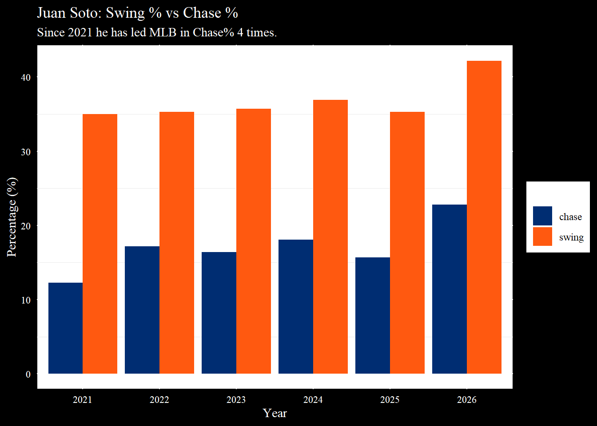
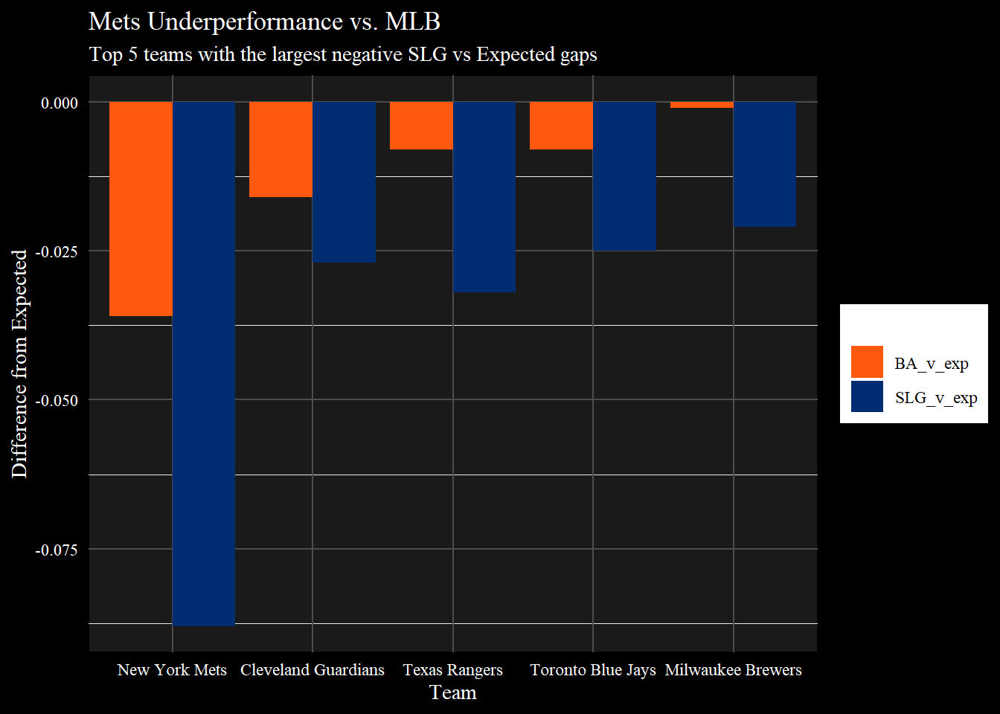

A.J. Ewing Gets the Call
Can this early-season call-up boost morale in Queens?
A.J. in the Big Apple 🍎 pic.twitter.com/1CKNZL0iAn
— New York Mets (@Mets) May 12, 2026
This afternoon, the Mets informed their #2 prospect, A.J. Ewing, that he will join the team in Queens tonight. He will start in CF tonight for the Mets as they host the Detroit Tigers. The Mets and GM David Stearns seem to be looking for any spark to light a fire under the team; the Mets currently have the lowest win total in MLB at 15.
The Mets unloaded their core from the first half of the 2020s this past offseason, losing Pete Alonso, Jeff McNeil, and Brandon Nimmo, who combined for 25 years of service time for the Mets as home-grown talent. In turn, David Stearns sought after the potential next generation of Mets stars: Luis Robert Jr, Freddy Peralta, and Bo Bichette. Yet, offensively, this team has been as disappointing as it gets. With an MLB-leading payroll of ~334 million dollars in 2026, the Mets are tied for the worst scoring team in baseball.
The weight of 334 million dollars caved in on itself rather quickly, putting out the raw star-power that the Mets’ lineup touted on Opening Day. Bo Bichette is having his worst start to a season in his career, posting a .559 OPS and totaling only 7 XBH, both the lowest through his first 40 games of a season in his career. The seemingly robotic Juan Soto isn’t even himself. He has swung at 42% of the pitches he has seen this year. The last season he swung this often was 2019, and since then, he has hung around 35%. This added aggression has also led to more chases on pitches out of the zone. His chase rate this year is 23%, the highest of his career. Of the past 5 seasons, Juan Soto has led qualified hitters in chase rate 4 times; the exception coming in 2024 when Jonathan India was MLB’s discipline king. The newfound aggression for Soto has unsurprisingly led to the lowest walk rate of his career, 14%. This is a 21% decrease from his first year in Queens.
Enter A.J. Ewing.
Ewing was drafted in 2023 as a fourth-round compensatory pick when Jacob DeGrom left in FA to the Texas Rangers in the 2022 offseason. Ewing was selected out of high school and committed to the University of Alabama in 2023 after his senior year in Ohio. The Mets offered him an astounding $675,000 bonus at the 134th pick, which holds a usual slot value of $483,000; an offer that rolled over the Crimson Tide. Ewing started the season at AA Binghamton, but was soon promoted to Syracuse with a slash line of .349/.481/.571. Since his April 28th promotion, Ewing has the most hits for the Syracuse Mets and leads the team in season-long batting average at .326. What separates him from his peers in AAA is his eye at the plate. In 51 PAs at Syracuse, he only struck out 5 times and chased 21% of pitches thrown out of the zone. He also has only walked 5 times, but this can be credited to 53% of the pitches that he sees are in the zone. This is not a bad thing, especially at the minor league level. These minor league pitchers respect the discipline Ewing has at the plate and are forced to give him pitches in the zone. A batter who can control how a pitcher approaches an at-bat starts the count with the upper hand; not so different from Juan Soto(not as much in 2026 so far).
For a team floundering offensively like the Mets, it doesn’t take long for the fan base to start getting impatient. The Mets GM, David Stearns, felt like a homegrown bat might give Citi Field a jolt in their first home game since April 30th. Looking at the options in AAA, Ewing is the obvious choice, especially with the injury to Luis Robert Jr. last month. Ewing has played every outfield position in the minors this year and can also play second.
While the Mets sit 8 games out of the final wild card spot, not all hope can be lost, and how could it with a $334 million roster? When accounting for quality of contact on balls in play, the Mets have been the unluckiest team in MLB. The actual BA and SLG are significantly lower than their xBA and xSLG on balls in play. Their BA and SLG are 0.036 and 0.088 points lower than expected. This is unsurprising as MLB’s highest-paid team does not end the year as the worst run-producing offense. The Mets will score more runs than they have been, eventually, and maybe Ewing will give them a boost. But only 2 teams have made the postseason since the Wild Card was introduced in 1995: the 2005 Astros and the 2024 Astros. The 2024 Astros wound up winning the AL West after their sluggish start, starting 15-25 and going 73-48 the rest of the way. But by this point in the year, the Astros had 178 runs; I will be the one to remind you that the Mets currently sit at 139.

A.J. Ewing starts his career off in a comfortable spot, facing off against the right-handed pitching Jack Flaherty; while in AAA, Ewing hit for an average of .351 against righties. Flaherty struggles to find the zone against left-handed hitters; he only throws 43% of pitches in the zone and walks 20% of lefties. If Ewing can keep his composure under the bright lights of Citi Field, he may find himself a good start to his career as a ringer.
Thank you for reading! Be sure to subscribe to our Substack email list so you know when a new article is online!